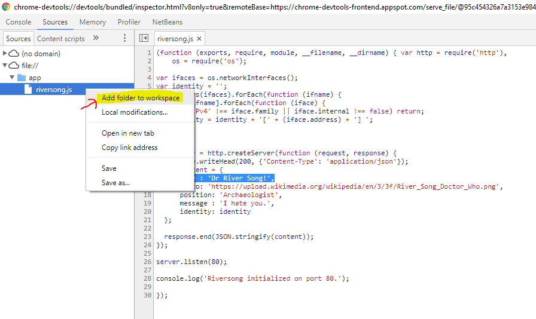
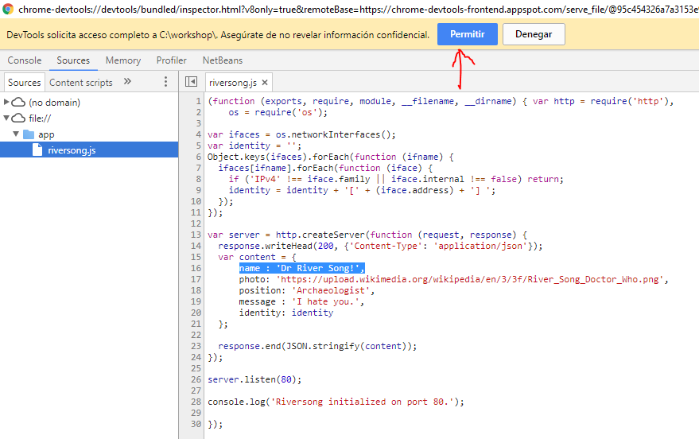
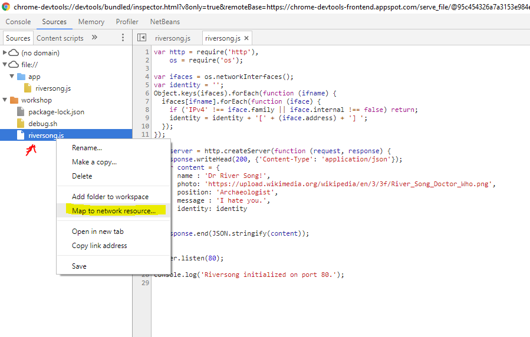
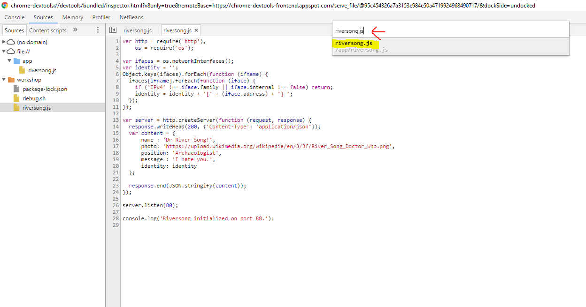

<local-folder> por tu carpeta de trabajo, por ejemplo /c/workshop en Windows o $HOME/workshop en Mac/Linux.node:alpine para comprobar lo sencillo que es utilizar Nodejs con Docker:docker run --rm -it node:alpine
> console.log('Hola mundo!');
> .exit
/workshop) y añade el fichero riversong.js con el siguiente contenido en ella:var http = require('http'),
os = require('os');
var ifaces = os.networkInterfaces();
var identity = '';
Object.keys(ifaces).forEach(function (ifname) {
ifaces[ifname].forEach(function (iface) {
if ('IPv4' !== iface.family || iface.internal !== false) return;
identity = identity + '[' + (iface.address) + '] ';
});
});
var server = http.createServer(function (request, response) {
response.writeHead(200, {'Content-Type': 'application/json'});
var content = {
name : 'Dr River Song!',
photo: 'https://upload.wikimedia.org/wikipedia/en/3/3f/River_Song_Doctor_Who.png',
position: 'Archaeologist',
message : 'I hate you.',
identity: identity
};
response.end(JSON.stringify(content));
});
server.listen(80);
console.log('Riversong initialized on port 80.');
/workshop?) y que mientras que la primera aparición de la palabra node hace referencia al nombre de la imagen en el Docker Hub la segunda se refiere al comando que quieres ejecutar en el contenedordocker run --rm --detach --publish 80:80 -w=/app --volume <local-folder>:/app node:alpine node riversong.js
localhost:80. Kill the container after that with docker kill <container-id>.--inspect in order to activate remote debugging (default port is 9229)docker run --rm -it --publish 80:80 --publish 9229:9229 -w=/app --volume <local-folder>:/app node:alpine node --inspect=0.0.0.0:9229 riversong.js
about:inspect on Chrome an press the inspect button:
riversong.js node on the left tree and use it to open the source code. Set a breakpoint in line 14.
Invoke again the application. You will be able to step over or evaluate expressions in the Nodejs runtime running inside the container.
You can now kill the container with docker ps and docker kill <id>.
nodemon is a Nodejs wrapper that makes easy reloading the code. Just modify the source of your project an dtype rs in the nodemon console.
debug.sh:#/bin/sh
npm install -g nodemon
nodemon --inspect=0.0.0.0:9229 riversong.js
docker run --rm -it --publish 9229:9229 --publish 80:80 -w/app --volume <local-folder>:/app node:alpine /bin/sh -c "/app/debug.sh"
riversong.js). For example, change line number 16:---
name : 'Dr River Song!',
+++
name : 'Dr River Song!!!!!!!!!!!!',
nodemon terminal type the reload command:rs
http://localhost:80Add folder to workspace. After that look for the directory that contains your application and accept the permission granting requirement:


riversong.js file and choose Map to network resource. Just accept the option provided by the browser.

Downloading nodemon each time you launch your container is a slow process. Let's create an image already containing it.
Dockerfile-dev in the working directory and paste this content on it:FROM node:alpine
RUN npm install -g nodemon
COPY riversong.js .
EXPOSE 80
CMD ["nodemon", "--inspect=0.0.0.0:9229", "riversong.js"]
build command to create the new image:docker build -t riversong:dev -f Dockerfile-dev .
docker run --rm -it --publish 9229:9229 --publish 80:80 -w/app --volume <local-folder>:/app riversong:dev
Dockerfile is even easier to write:FROM node:alpine
COPY riversong.js .
EXPOSE 80
CMD ["node", "riversong.js"]
docker build -t <repo>/riversong:port80 .
docker push <repo>/riversong:port80